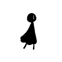

Development is in full swing for our minimum viable product this week! Learning from a 2D platformer tutorial, we’ve coded in movement and began working on the assets and map. Also, we brainstormed some different melodies for our background music. Things are going well, and we will have a MVP next week.
Here are some samples of the character assets standing still and walking.

- 
To continue, we’ve continued expanding our marketing materials. You may have noticed something new on the main page. We have a key visual! Here it is along with some variations to shape and size.
Furthermore, we began drafting our trailer. Look forward to it next week!
From here, we will complete our MVP by finishing the character assets, abilities, and tile map. Also, we will publish our Kickstarter page and trailer. Then, we will begin having others playtest the MVP to work out the bugs and make an even better game.